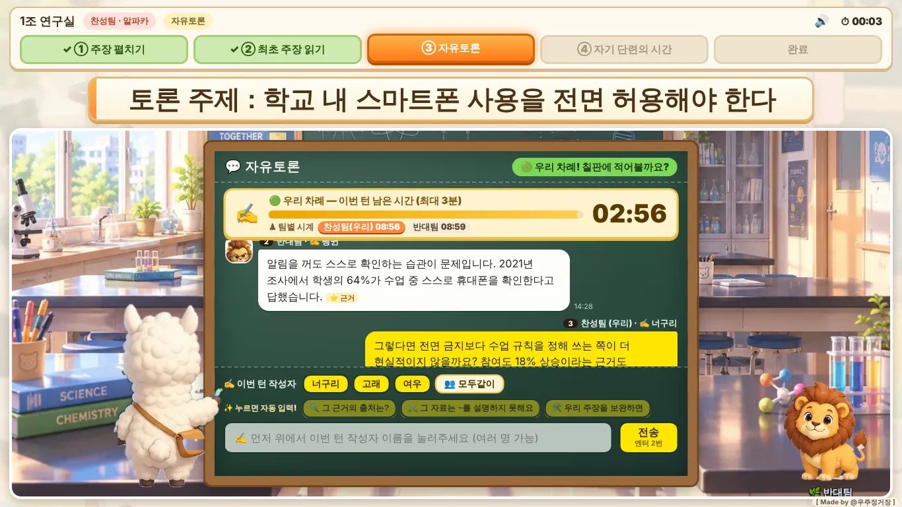
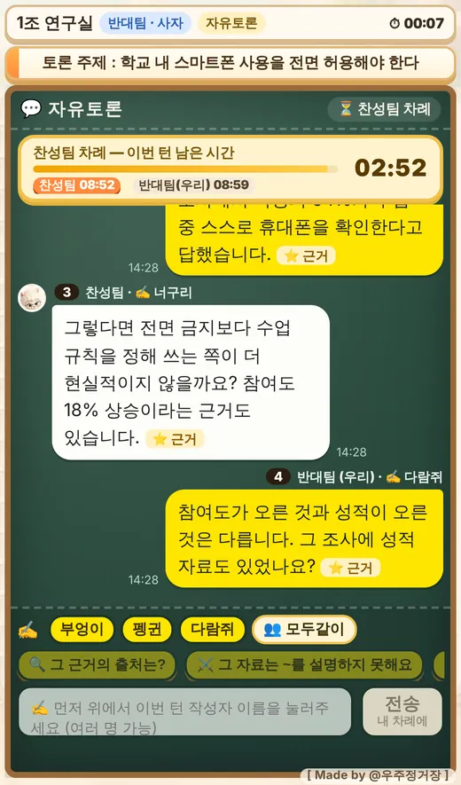
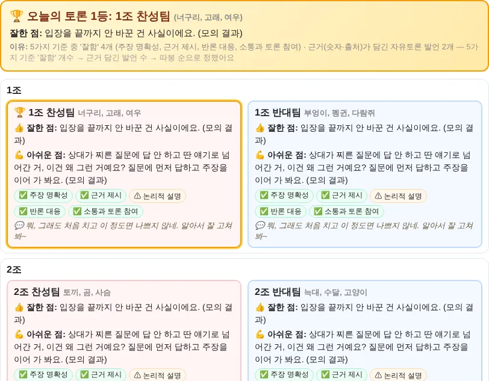

토론 수업 기록, 힘드셨죠?배정부터 생기부까지, 한 번에.
누가 무슨 말을 했는지 받아 적느라 정작 토론을 못 본 적, 있으시죠. 우리교실, 토론앱은 팀 랜덤 배정, 단계별 진행과 체스 시계, 토론 기록 자동 저장, AI 피드백, 생기부 초안 안내까지 맡아요. 선생님은 토론만 지켜보시면 돼요.
토론 수업이 힘든 건 토론보다 그 주변 일 때문이에요
팀 짜기, 시간 재기, 받아 적기, 생기부 쓰기. 선생님이 혼자 하던 일을 앱이 나눠 맡아요.
한 차시 안에 주장부터 시상식까지
모든 조가 같은 순서로 움직이고, 단계마다 시간이 정해져 있어 어느 조도 무한정 늘어지지 않아요. 아래는 기본 시간이고, 수업 세팅에서 단계별로 바꿀 수 있어요(자유토론은 절반씩 팀별 시계, 턴당 3분은 그대로).
최초 주장 펼치기
5분 +1분찬성·반대가 동시에 핵심 주장·근거·출처를 써요.
최초 주장 읽기
3분찬성 VS 반대 두 노트를 나란히 놓고 비교해요.
자유토론
18분체스 시계로 번갈아 반박해요. 턴당 3분, 팀당 9분.
자기 단련의 시간
10분 +1분×2최종 결론과 자기 피드백을 한 화면에서 정리해요.
피드백 · 투표 · 시상식
약 3분AI 피드백을 읽고 다른 조 결론을 구경한 뒤 따봉 투표로 1위를 뽑아요.
배정 · 진행 · 기록 · 피드백 · 생기부
선생님 컴퓨터 한 대에서 실행하고, 학생은 휴대폰이나 태블릿 브라우저로 들어와요. 학생 기기에 설치할 것은 없어요.
찬반 팀 랜덤 배정
학생이 고른 조대로 하거나, 체크 한 번으로 상대 조만 무작위로 섞어요.
단계별 자동 진행
시간이 지나면 경고 후 다음 단계로 넘어가요. 선생님은 조별 진행 상황을 한 화면에서 봐요.
토론 기록 자동 저장
모든 발언이 작성자와 함께 남아요. 조별 PDF, 전체 CSV로 내려받고 반별로 보관해요.
AI 팀 피드백과 토론 1등 팀
5가지 기준(주장 명확성·근거 제시·논리적 설명·반론 대응·소통)으로 팀마다 잘한 점과 아쉬운 점을 알려줘요.
학생별 생기부 초안
학생이 '작성자'로 남긴 발언만 근거로 세특 문체 초안을 만들어 엑셀로 드려요. 끌 수도 있어요.
휴대폰으로 바로 참여
같은 와이파이는 물론, 인터넷 모드면 짧은 주소와 4자리 접속 코드로 어디서나 들어와요.
학생은 교실 같은 화면에서, 선생님은 한눈에


토론이 끝나면 조별 피드백과 1등 팀이 바로
모든 조·팀의 잘한 점, 아쉬운 점, 5가지 기준 결과가 한 화면에 모여요. 오늘의 토론 1등 팀은 이유와 함께 나와요.

학생 학번·이름은 선생님 컴퓨터 밖으로 나가지 않아요
웹 서비스가 아니라 선생님 컴퓨터에서 돌아가는 프로그램이에요. 처음 켤 때 무엇이 어디에 저장되는지 안내하고 동의를 받아요.
- 이 컴퓨터에만
- 학번·이름·닉네임, 토론 기록, 생기부 초안, AI 키. 제작자도 볼 수 없어요.
- AI로 가는 것
- 피드백·생기부를 만들 때 닉네임과 발언 내용만 보내요. 발언 속 실명·학번은 보내기 전에 닉네임으로 바꿔요.
- 인터넷 모드
- 학번·이름은 학생 기기에서 암호화해서 보내고, 풀 수 있는 열쇠는 선생님 컴퓨터에만 있어요. 명단을 미리 등록하면 학생은 닉네임만 입력해요.
내려받고, 두 번 누르면 끝
처음 한 번만 필요한 부품을 스스로 내려받아 설치해요. 그다음부터는 바탕화면의 바로가기로 바로 켜져요.
ZIP 내려받아 압축 풀기
원하는 폴더에 압축을 풀어요. 바탕화면이나 문서 폴더 어디든 괜찮아요.
토론앱_시작.bat 더블클릭
처음엔 부품 설치로 1~2분 걸려요. 파이썬이 없으면 설치 방법을 안내해요. 바탕화면에 '토론 수업 앱' 바로가기가 생겨요.
교사 화면에서 수업 세팅
조 수와 토론 주제를 정하고, 화면에 뜬 주소(인터넷 모드는 짧은 주소+접속 코드)를 학생에게 알려 주면 시작이에요.
궁금한 점
AI 키가 없어도 쓸 수 있나요?
네. 팀 배정, 진행, 체스 시계, 토론 기록, PDF, 따봉 투표·시상식은 AI 없이 모두 돼요. AI 키를 넣으면 팀별 피드백과 생기부 초안이 더해져요. 키가 없으면 그 칸에 "API 미연결로 피드백 화면을 생성할 수 없어요"라고 안내해요.
학생이 같은 와이파이에 있어야 하나요?
두 가지 방식이 있어요. 토론앱_같은와이파이.bat은 같은 와이파이에서, 토론앱_시작.bat(인터넷 모드)은 학생이 데이터나 다른 와이파이를 써도 짧은 주소와 접속 코드로 들어올 수 있어요.
몇 명까지 함께 쓸 수 있나요?
한 수업에 1~10개 조, 조마다 찬성팀·반대팀이 한 팀씩이에요. 조 수는 수업 시작 전에 교사 화면에서 정해요.
맥이나 크롬북에서도 되나요?
선생님 컴퓨터(앱을 켜는 컴퓨터)는 Windows용이에요. 학생은 휴대폰, 태블릿, 크롬북, 맥 등 브라우저가 있는 기기면 어디서든 들어와요.
수업 기록은 어디에 남나요?
압축을 푼 폴더 안에 저장돼요. 반마다 보관해 두었다가 수업이 끝난 뒤 언제든 조별 PDF, 조별 피드백 엑셀, 생기부 엑셀을 만들 수 있어요.
생기부 문장을 그대로 써도 되나요?
아니요. 학생이 직접 쓴 발언만 근거로 만든 초안이에요. 반드시 선생님이 검토·수정한 뒤 사용해 주세요.